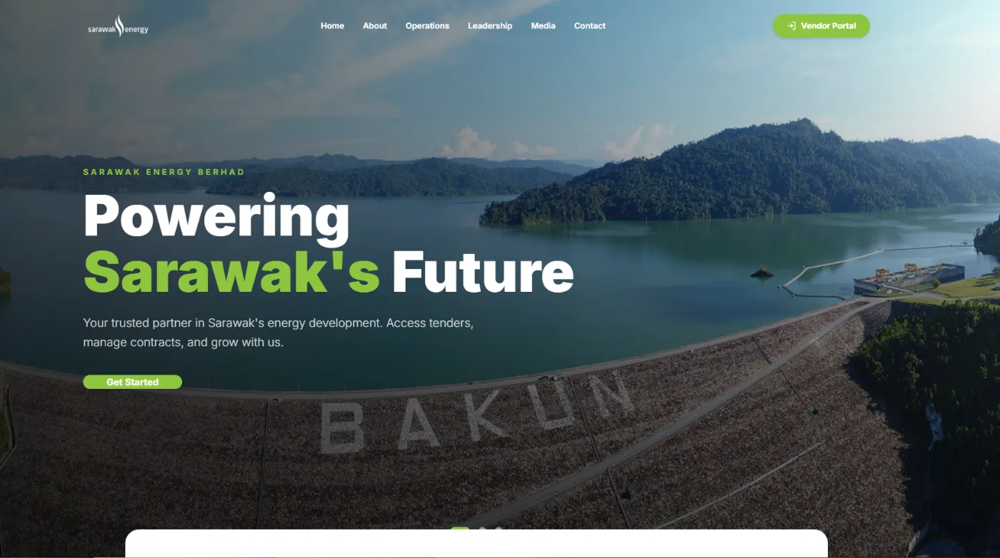

Vendor Management System
Fullstack Developer, full SDLC
Reads vendor PDFs, extracts the data automatically and turns it into presentation reports. I took it from requirements gathering through to deployment.
- Automated PDF data extraction with algorithmic parsing
- Interface switches between English and Bahasa Melayu
- Presentation reports generated with PptxGenJS
